1. De onde vêm os arquivos
A única fonte do mascote é o pacote final aprovado pelo QA em design/mascote/final/ (relatório qa/relatorios/final-rodada-2). As imagens deste guia são cópias byte a byte desse pacote (pasta arte/, conferidas por SHA-256), menos os exemplos de erro da seção 11, que ficam em errado/ e nunca devem ser usados.
- Versão clara (
vetor/claro/): a arte aprovada, sem nenhuma mudança. Para fundo claro. - Versão escura (
vetor/escuro/): a mesma arte com um contorno creme de separação por fora. Para fundo escuro. - Uma cor: positivo (tinta
#111111) e negativo (tinta branca). - Ícone do app, PNG em vários tamanhos e as 7 expressões, no mesmo pacote.
2. Cores oficiais
| Cor | Nome | Hex | Papel |
|---|---|---|---|
| Ardósia | #4A5560 | penugem (corpo) | |
| Ardósia-escura | #333C45 | sombra do fundo do corpo, nadadeiras, olhos | |
| Creme | #FBF3E4 | face e barriga; fundo do ícone; contorno da versão escura | |
| Âmbar | #E4A33A | bico e pés | |
| Verde-azulado | #3EA8AE | gorro (acento); gotas de calor gorro fixo · provisório | |
| Tinta única | #111111 | versão em uma cor, positivo | |
| Branco | #FFFFFF | versão em uma cor, negativo; camada monocromática do ícone Android |
Origem: design/mascote/final/LEIA-ME.md, seção 3, e design/prototipos/direcao/direcoes.md, bloco "O mascote (DSG-13)", que fixa as mesmas cinco cores da versão colorida.
#3EA8AE, e nenhuma cor da versão colorida muda. Assim respondeu a pergunta P-20 dos protótipos (design/prototipos/direcao/telas.md). O responsável ainda pode decidir que o gorro mude de cor; enquanto isso, vale o fixo. O verde-azulado entrou no lugar do vermelho da ficha justamente para o gorro não lembrar o gorro vermelho de outro pinguim conhecido (apresentacao/opcoes/03/dados.js, checagem de originalidade).3. Qual versão usar e contraste
Regra de partida: o mascote precisa se separar do fundo. A medida usada no projeto é de pelo menos 3:1 entre o corpo e o que está atrás dele (design/prototipos/direcao/padrao-producao.md, seção 6, para o apoio; é também o mínimo da WCAG 2.2, critério 1.4.11, para elementos gráficos).
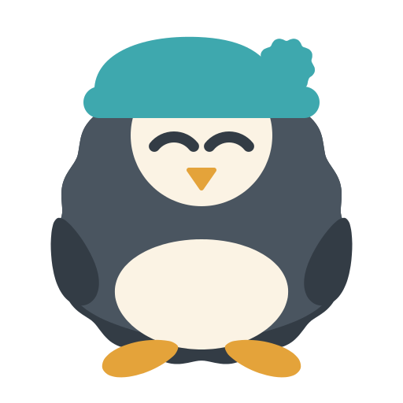
#FBF3E4: corpo 6,90:1.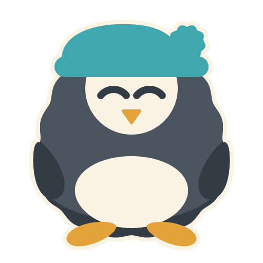
#121212 e a 6,90:1 do corpo.#F3D9B8, da direção Brasa): corpo 5,59:1. É a regra dos protótipos.#808080: corpo 1,93:1. O fundo mais escuro que ainda passa é #A4A4A4 (3,05:1).

#111111) em fundo de #606060 para cima, inclusive branco (18,88:1). Negativo (branco) em fundo de #949494 para baixo (18,73:1 no #121212).| Situação | Versão | Por quê |
|---|---|---|
Fundo claro com luminância a partir da de #A4A4A4 (branco, creme, papel) | clara | o corpo fica com 3:1 ou mais (7,61:1 no branco) |
| Fundo escuro | escura; ou clara sobre um apoio claro com 3:1 ou mais contra o corpo; ou uma cor em cor clara | nenhum fundo escuro chega a 3:1 contra o corpo #4A5560: a conta exigiria luminância negativa |
| Uma tinta só (carimbo, gravação, impressão de uma cor) | uma cor, positivo ou negativo | a versão em uma cor é a prova de identidade do personagem (direcao/padrao-producao.md) |
| Interface que pinta o mascote com a cor da própria paleta | só a uma-cor, trocando o preenchimento | única troca de cor permitida (prototipos/direcao/padrao-producao.md, seção 6); a tinta escolhida mantém 3:1 contra o fundo |
#FFFFFF, o gorro fica a 2,83:1 e os pés a 2,19:1, abaixo de 3:1. Sobre creme, ficam a 2,57:1 e 1,98:1. A silhueta continua inteira porque o corpo faz o contorno (7,61:1), e o gorro e os pés leem pela forma, encostados no corpo. É a arte aprovada e não muda. Consequência prática: não use o gorro nem os pés sozinhos, recortados do corpo, como sinal; e não ponha o mascote sobre um fundo da mesma família de cor do gorro ou dos pés.Contrastes calculados pela fórmula da WCAG a partir dos hex, para este guia e para o pacote final (final/LEIA-ME.md, seção 4). Os apoios dos protótipos (5,59:1 a 6,12:1) vêm de prototipos/direcao/direcoes.md. A versão escura do pacote final atende à mesma regra dos protótipos, porque traz o próprio apoio claro: o contorno creme, a 6,90:1 do corpo.
4. Proporções
Medidas na prancha de 512 da arte principal, pelas coordenadas do SVG e pela caixa renderizada (captura.py conferir). Valem para qualquer tamanho, porque o mascote só muda de tamanho proporcionalmente.
| Parte | Medida (prancha 512) | Proporção |
|---|---|---|
| Figura inteira | 384 × 434 | largura = 0,88 da altura |
| Gorro (copa e aba) | da linha 46 à 150: 104 de altura; aba com 300 de largura | 24% da altura; aba com 78% da largura |
| Face | círculo de 180, centro em y = 172 | 41% da altura |
| Olhos | arcos de 50 de largura, centros a 70 um do outro, traço de 14 | — |
| Bico | 32 × 23 | — |
| Barriga | 220 × 140 | 57% da largura |
| Nadadeiras | 61 × 112 cada | — |
| Pés | 98 × 48 cada | — |
| Chão | y = 480 em todas as artes em pé | alinhe por ele |
A ficha de origem descreve a construção: ovo de cabeça e corpo de 1 para 1, sem pescoço (direcao/conceitos.md, ficha 03). As vistas, as poses e o sem-acessorio mantêm a mesma altura e o mesmo chão. Os desvios aceitos pelo QA estão em qa/relatorios/03-rodada-1.md.
5. Área de respiro
O respiro já vem dentro do arquivo: use sempre o quadrado inteiro da prancha. Nunca recorte o viewBox nem aproxime a figura da borda, e não deixe texto, botão, borda de cartão ou outra figura entrar nesse quadrado. Um apoio (halo, etiqueta) pode ficar atrás do mascote, sem cobrir a figura.
| Medida | Valor | Origem |
|---|---|---|
| Respiro mínimo de qualquer arte em pé | 32 de 512 = 1/16 do lado, nos quatro lados | margem de segurança do padrão de produção (direcao/padrao-producao.md, seção 3) |
| Poses com parte para fora (pulo, nadadeira erguida) | 16 de 512 = 1/32 do lado | mesma seção |
| Respiro medido na arte principal | 64 · 46 · 32 (lados · em cima · embaixo) | caixa medida pelo captura.py conferir |
| Versão escura | o contorno ocupa 8 desse respiro; embaixo sobram 24 | final/LEIA-ME.md, seção 2.2 |
Na prática, se o mascote aparece com 96 px, o quadrado ocupa 96 × 96 px, e o mínimo de respiro em volta da figura é de 6 px (1/16 de 96).
6. Tamanhos mínimos
Medidos para este guia: cada arte foi desenhada pelo Chrome em 16, 20, 24, 32, 40, 48, 64 e 96 px reais (densidade 1, sem reduzir depois), sobre branco e sobre #121212. As capturas estão em medidas/: tamanhos-*-real.png em tamanho real e tamanhos-*-x4.png ampliadas 4 vezes sem suavizar. Os 48 px batem com as capturas do QA (qa/relatorios/03-r2 e final-r1).
| Uso | Arte | Mínimo | O que se viu nas capturas |
|---|---|---|---|
| Marca pequena (cabeçalho, "você está aqui", favicon) | icone claro | 24 px | em 24 px lê "pinguim de gorro": gorro, corpo, barriga e pés; o rosto aparece a partir de 32 px. Em 16 e 20 px vira uma mancha. |
| Marca pequena em fundo escuro | icone escuro | 32 px | abaixo de 32 px o contorno creme fica com menos de 1 px e a separação do fundo se perde |
| Uma tinta só | uma-cor (positivo ou negativo) | 24 px | em 24 px a face e a barriga recortadas ainda aparecem; em 16 px fecham |
| Figura inteira na interface (principal e poses) | principal, pose-* | 48 px | em 48 px lê bem, e o gesto da pose de alerta aparece; abaixo disso, use o icone, que é a arte feita para tamanho pequeno |
| Figura inteira em fundo escuro | versão escura | 48 px | em 48 px o contorno de 8 vira cerca de 1 px e ainda separa a figura; em 32 px some |
| Quando a expressão é a mensagem | expressao-*, pose-alerta, pose-camping | 64 px | sobrancelhas, pupilas, pálpebras e gotas leem a partir de 64 px; em 48 px sobra a postura, não a expressão |
| Impressão | as mesmas regras | 6,4 mm (ícone e uma cor) · 12,7 mm (figura inteira) · 16,9 mm (expressão) | convertido de 24, 48 e 64 px a 1 px = 1/96 de polegada (definição do CSS). não testado em papel O PRD só cita impressão no cartaz do camping, que está guardado para depois. |
Os mesmos tamanhos, ao vivo nesta página
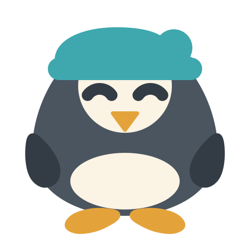
243248 6424
6424 3248
3248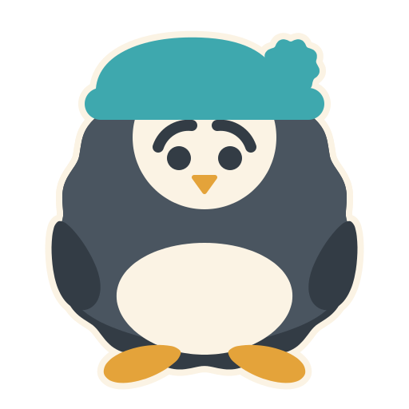
6424A direção Mapa dos protótipos já usa o icone em 24 px como "você está aqui" (prototipos/direcao/direcoes.md), dentro do mínimo medido. Os tamanhos são em px de CSS; numa tela de densidade 3, 24 px são 72 pixels físicos.
7. Poses e onde usar

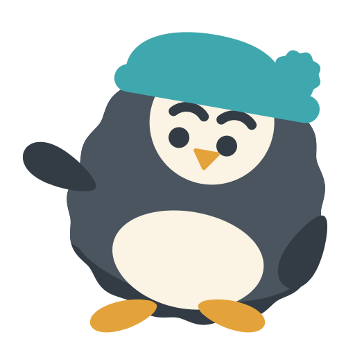
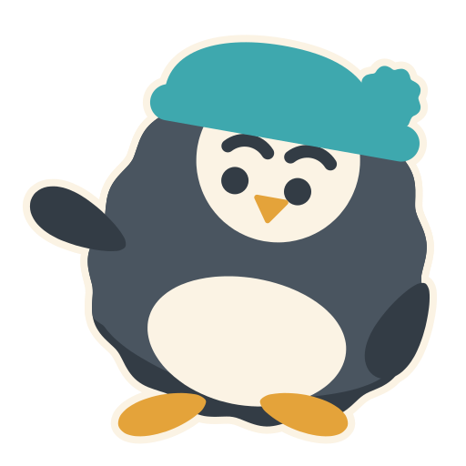


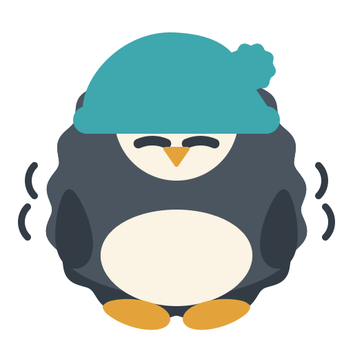

O "onde usar" é o padrão de partida de prototipos/direcao/direcoes.md; cada direção tem a sua tabela de poses por tela. Regras dos protótipos que valem para todo uso: no máximo um mascote por tela, e nunca dentro de linha de lista, tabela de gastos ou campo de formulário.
8. As 7 expressões
São a referência 2D do modelo 3D (MSC-11) e estão no pacote final aprovado. Quatro são as próprias poses; três foram desenhadas no pacote final, na mesma construção.

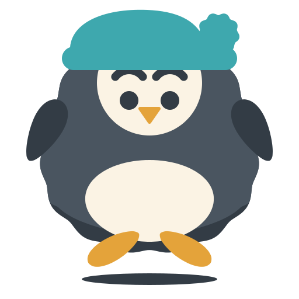


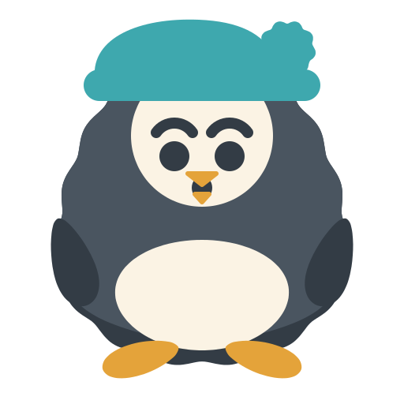
Nenhum documento do projeto define ainda em que tela entram preocupado, com calor e surpreso. A única ligação documentada é o clima da viagem: o PRD (E1-01) pergunta "frio, ameno, calor", e os protótipos usam a pose de frio na estadia. Usar "com calor" numa viagem de clima quente é o paralelo natural, mas fica para o responsável decidir (seção 13). Até lá, essas três servem de referência para o 3D e para vídeo. Em tela, use o tamanho mínimo de 64 px da seção 6.
9. Vistas e versão sem gorro

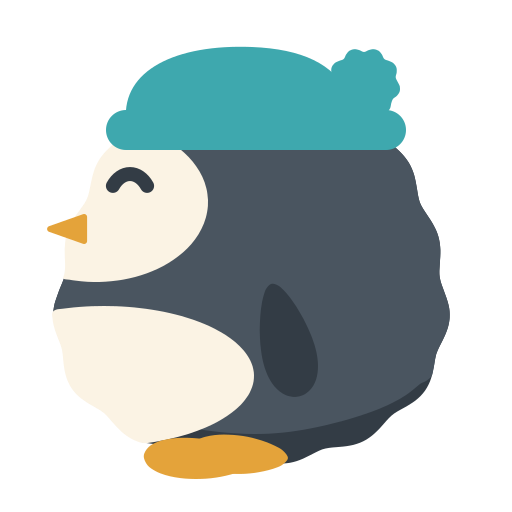
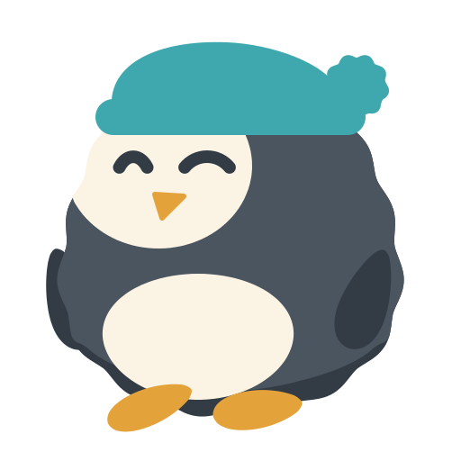

As vistas são referência de volume para o modelo 3D (MSC-09) e não entram nos protótipos (prototipos/direcao/padrao-producao.md, seção 6). A versão sem gorro existe para provar que o personagem não depende do acessório (regra do direcao/padrao-producao.md). Nenhum documento prevê usá-la em tela. A vista de lado é a única que olha para um lado: não a espelhe para "olhar para o outro lado" (seção 11).
10. Ícone do app


- O ícone do app usa a arte
icone(feita para tamanho pequeno), sobre fundo creme#FBF3E4(corpo a 6,90:1). Nunca usa aprincipalreduzida. - Não acrescente texto, selo, borda, sombra nem cantos ao arquivo: as lojas proíbem texto que sugira ranking ou promoção e aplicam máscara e sombra sozinhas (fontes em
final/LEIA-ME.md, seção 6). - Os arquivos, tamanhos e a configuração para o Expo estão em
final/LEIA-ME.md, seção 2.3.
11. O que o mascote nunca faz
Cada exemplo abaixo foi feito a partir da própria arte, só para mostrar o erro. Base: prototipos/direcao/direcoes.md (bloco DSG-13), prototipos/direcao/padrao-producao.md (seção 6), direcao/originalidade.md e CLAUDE.md (sem marcas de terceiros).
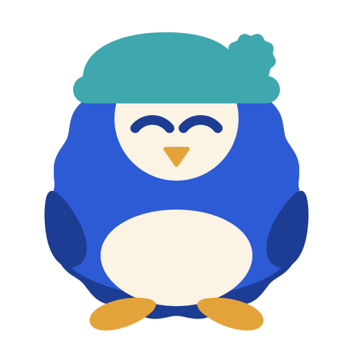
uma-cor muda de tinta.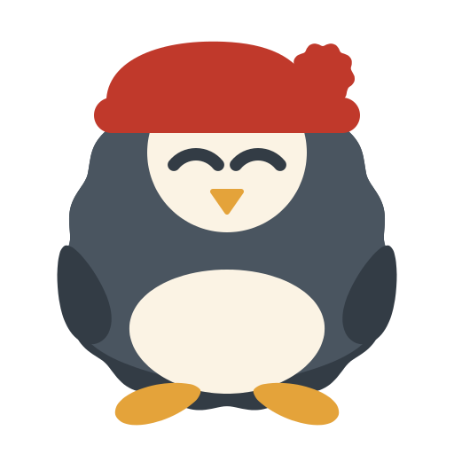
#3EA8AE. O vermelho, além disso, aproxima o mascote de outro filhote de gorro vermelho já conhecido.direcao/originalidade.md).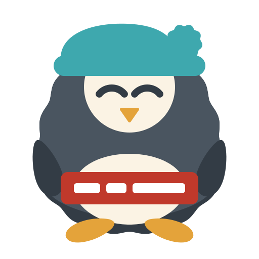
E também, sem exemplo desenhado:
- Não é redesenhado, nem ganha roupa, objeto, cenário ou outra pose fora do pacote.
- Não tem partes do corpo animadas na interface; o movimento vem do modelo 3D aprovado (seção 12).
- Não aparece mais de uma vez por tela, nem dentro de linha de lista, de tabela de gastos ou de campo de formulário.
- Não usa laranja-avermelhado no corpo, nem a dupla azul-royal com laranja (
direcao/originalidade.md).
12. 3D e vídeo
O modelo 3D (MSC-10 a MSC-12) e o teste de 5 segundos em vídeo (MSC-14) foram aprovados pelo QA: o modelo na rodada 3 (qa/relatorios/modelo3d-rodada-3.md) e o vídeo na rodada 2 (videos/qa/relatorios/VID-01-etapa2-rodada-2.md). O PRD pede o mascote como personagem dos vídeos 3D de divulgação (seção "Mascote pronto para os vídeos"). Cada regra abaixo diz de onde vem.
12.1 Onde está o modelo e qual é o arquivo oficial
| Item | Valor | Origem |
|---|---|---|
| Arquivo oficial | design/mascote/3d/campinguim.glb | 3d/LEIA-ME.md, cabeçalho: "o que o vídeo e o app usam" |
| Arquivo-fonte | campinguim.blend e os scripts de 3d/fonte/ | 3d/LEIA-ME.md, seção 1 |
| Formato | GLB binário único, sem textura, sem imagem, sem Draco, sem meshopt e sem KTX2; 1.080.632 bytes; 23.056 triângulos (teto de 25.000) | 3d/LEIA-ME.md, seção 4 |
| SHA-256 aprovado | a51fb8af333b4658e43691eda5000944dcb39945d9dc8db4c4ad3ec090ec4597 | qa/relatorios/modelo3d-rodada-3.md e 3d/LEIA-ME.md, seção 6. O SHA anterior (dd9a7820…) não vale mais |
| Altura | 0,40 m, do chão ao topo do gorro; largura com as nadadeiras 0,388 m; profundidade 0,368 m | 3d/PARTES.md, seção 7. A altura foi aprovada pelo responsável em 24/11/2026 (3d/LEIA-ME.md, seção 3) |
| Eixos e unidade | +Y para cima, mascote de frente para +Z, unidade em metros (1 unidade = 1 m) | 3d/PARTES.md, início, e 3d/LEIA-ME.md, seção 2 |
| Origem | no chão, no meio entre os centros dos dois pés; nenhum nó de topo tem translação, rotação nem escala | 3d/LEIA-ME.md, seção 2 |
| Peças | 10 malhas, 10 materiais, 9 ossos | 3d/PARTES.md, seções 1 a 3 |
3d/LEIA-ME.md, início), e o 2D do pacote final não muda por causa do 3D (3d/LEIA-ME.md, seção 5.1). O desvio aceito é um só, a variante C da máscara, escolhida pelo responsável: de frente, face +24%, barriga +23% e olhos +12% contra o vetor. O que sair além disso (outra forma, outra cor, outra altura, traço novo) é reprovável (3d/LEIA-ME.md, seção 5.1).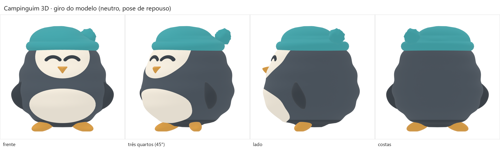
3d/previas/giro.png).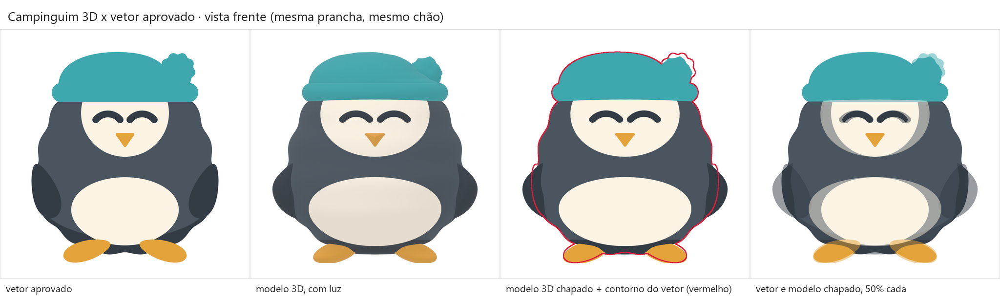
3d/previas/comparar-frente.png). O contorno do corpo, do gorro, dos pés e das nadadeiras coincide; face e barriga ficam mais largas na medida do desvio acima (3d/LEIA-ME.md, seção 6).12.2 As 7 expressões, os 7 clipes e as 2 âncoras
Expressões (alvos de forma), com estes nomes exatos, sem prefixo: neutro, alegre, preocupado, alerta, frio, calor, surpreso. A forma de base é o neutro. Use uma expressão por vez, ou misture com os pesos somando 1 (3d/PARTES.md, seção 5). Cada uma segue o SVG de mesmo nome em final/vetor/claro/expressoes/ (seção 8 deste guia).
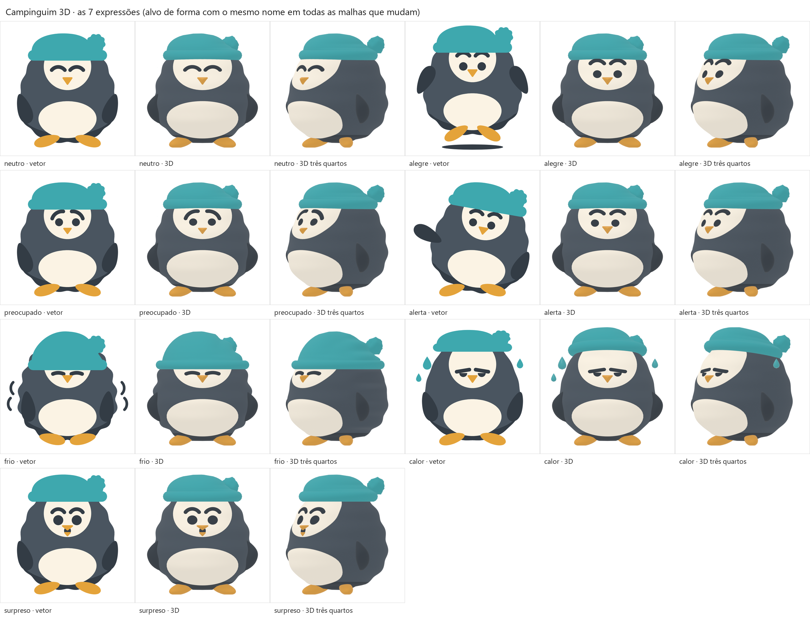
3d/previas/expressoes.png).Clipes (animações de osso, 30 quadros por segundo), com estes nomes exatos:
| Clipe | Quadros | Tipo | Expressão que combina |
|---|---|---|---|
parado-respirando | 60 (2,0 s) | ciclo | qualquer |
andar | 30 (1,0 s) | ciclo; anda no lugar. Para deslocar, mova o nó raiz a 0,088 m/s para a frente (+Z) | qualquer |
acenar | 60 (2,0 s) | pontual | alegre |
apontar | 48 (1,6 s) | pontual; aponta com a nadadeira direita do personagem | alerta |
olhar-para-cima | 48 (1,6 s) | pontual | surpreso ou neutro |
tremer-de-frio | 30 (1,0 s) | ciclo | frio |
comemorar | 45 (1,5 s) | pontual; pula 5,5 cm | alegre |
Origem: 3d/PARTES.md, seção 6. Os clipes só mexem em ossos, por isso combinam com qualquer expressão. Nos 3 ciclos, o último quadro emenda no primeiro sem repetir a pose; nos 4 pontuais, o primeiro e o último quadro são o repouso (quadro 0 de parado-respirando), para emendar sem salto. Verificado nas emendas (3d/LEIA-ME.md, seção 6).
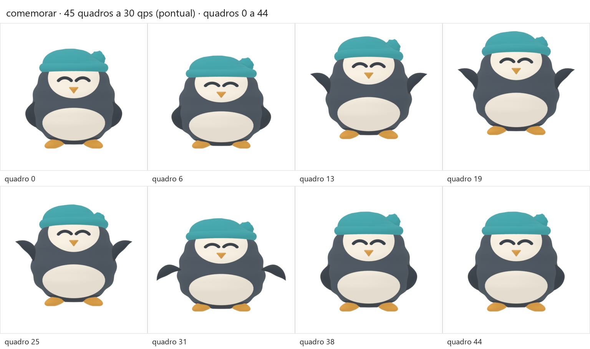
comemorar (3d/previas/clipes/comemorar.png). Há uma folha igual para cada um dos 7 clipes na mesma pasta.Âncoras (nós vazios, filhos de osso, que acompanham o movimento) (3d/PARTES.md, seção 4):
campinguim.ancora-rotulo, filha do ossocabeca, 3 cm acima do topo do gorro. Serve para prender um rótulo; fica acima do gorro também nosurpreso.campinguim.ancora-mao, filha do ossonadadeira-direita, na ponta da nadadeira que aponta. Serve para prender algo à mão do mascote (a nadadeira que levanta noapontar).
No three.js, o nome do nó perde o ponto (campinguimancora-rotulo). Ache as peças pelo nome original, em userData.name, com a função peca() da seção 8 do 3d/PARTES.md. Nomes de clipes, de alvos de forma e de materiais não mudam.
12.3 Regras de uso em vídeo
Valem para quem renderiza o mascote em vídeo. Os números vêm do teste de 5 segundos (MSC-14, videos/NOTAS.md, seção "etapa 2") e das medições do QA.
| Regra | Origem |
|---|---|
O render copia o modelo de design/mascote/3d/ no início de todo render e confere o SHA-256. Se a cópia diferir da fonte, o render para. Nunca se usa uma cópia antiga: videos/public/modelos/ não é versionado. design/ é só leitura. | videos/NOTAS.md (etapa 2, "Modelo"); QA VID-01-etapa2-rodada-2.md, "GLB" |
| Nenhum material do modelo é sobrescrito na cena fora da janela do destaque. A cada quadro, a cor de cada material é recalculada a partir da cor original; com o efeito em 0, volta a original. O material dos olhos nunca é mexido pela cena: defeito de pupila se corrige no modelo. | QA VID-01-etapa2-rodada-2.md, "Nenhum material sobrescrito"; videos/NOTAS.md, "Divergências (etapa 2)" |
Destaque ("por dentro"): uma peça por plano. No teste, só o gorro: fica translúcido (opacidade de 1 a 0,3), sobe 2,5 cm e ganha contorno e brilho #4FD1FF. Sobe de 2,1 s a 3,0 s e volta de 3,8 s a 4,3 s. | videos/NOTAS.md (etapa 2, "Por dentro"); docs/TECNICA-3D.md, seção 6 ("uma peça por plano") |
| O resto perde no máximo 25% de saturação e 15% de brilho. Com 60% e 35% o corpo ficava quase preto e o QA reprovou. | videos/NOTAS.md; QA VID-01-etapa2-rodada-2.md, item 2 (a rodada 1 reprovou) |
| As cores originais voltam antes do fim. Do quadro 129 ao 149 (último), o mascote está nas cores do desenho e o gorro opaco e no lugar. | videos/NOTAS.md; QA VID-01-etapa2-rodada-2.md, item 2 (q149) |
Enquanto o gorro está translúcido, boca e gotas ficam escondidas (visible = false). Olhos e bico ficam, porque no alegre são o rosto. | videos/NOTAS.md, "Divergências (etapa 2)"; 3d/PARTES.md, seção 8 |
| Tamanho no quadro: no teste, 1080 × 1920, o mascote ocupou de 38,1% a 40,5% da altura (731 px, 758 px e 777 px de 1920, do topo do gorro à base dos pés), como o responsável pediu. | QA VID-01-etapa2-rodada-1.md, item "Tamanho"; sem mudança na rodada 2 |
Luz usada no teste: ambiente de estúdio gerado em código (RoomEnvironment do three.js, intensidade 0,3), uma luz direcional principal e uma de contra-luz; sombra de contato por textura gerada em código; mapeamento de tons ACES e saída em sRGB. Nada de HDRI baixado. | videos/NOTAS.md, "Divergências da TECNICA-3D.md", seção 7 |
Animação como função do quadro: um AnimationMixer, uma ação por vez, setTime calculado do quadro, ações em LoopOnce com clampWhenFinished. Nada anda sozinho: sem useFrame, sem relógio, sem Math.random. | videos/NOTAS.md (etapa 2, "Animação"); docs/TECNICA-3D.md, seção 4 |
Rótulo e legenda são HTML por cima do vídeo, não 3D. O rótulo é preso à âncora campinguim.ancora-rotulo. | docs/TECNICA-3D.md, seções 4 e 5; videos/NOTAS.md |
Antes de entregar, confira todos os quadros do vídeo final. O conferidor checa_mascote.py mede o rosto e a barriga claros em cada quadro e acusa quadro abaixo de 3% ou abaixo da metade da mediana dos vizinhos. No teste: 150 de 150 quadros com o mascote (mínimo 0,431, mediana 0,540). Uma amostra de poucos quadros não pega falha de carga que acontece de vez em quando. | videos/NOTAS.md, "Como rodar (etapa 2)" e "Repetibilidade"; QA VID-01-etapa2-rodada-2.md, item 1 |
Antes de entregar, faça a folha de fidelidade ao desenho (fidelidade.py): os quadros do vídeo ao lado do desenho aprovado de final/png/claro. Cor mais escura por luz e sombra não é perda de cor; compare o lado iluminado. | videos/NOTAS.md; MSC-14 no PRD ("o QA confere fidelidade ao desenho escolhido"); QA VID-01-etapa2-rodada-2.md, "Pedidos do piloto" |
Formato do teste: H.264, 1080 × 1920, 30 fps, 150 quadros (5,000 s). Quadros 0, 75 e 149 renderizados 3 vezes ficaram iguais a olho (no máximo 1 em 255 por canal, em 41 pixels no quadro 75). Esses números descrevem o teste de 5 segundos; o guia não os transforma em regra para outros planos (seção 13).
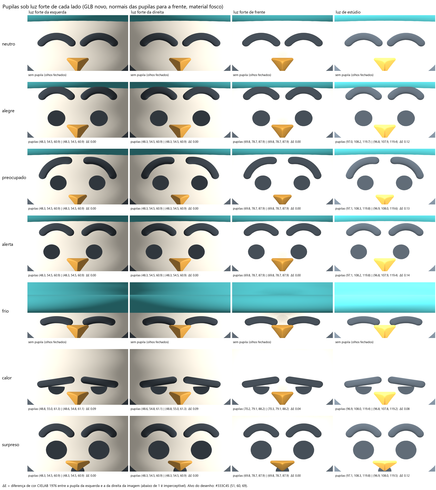
3d/previas/olhos-luz-lateral.png; 3d/LEIA-ME.md, seção 6.2).12.4 O que o modelo nunca faz em 3D
No mesmo espírito da seção 11, só com o que as fontes sustentam:
- Não é redesenhado: nenhuma forma, cor, altura ou traço novo além do desvio aceito da variante C (
3d/LEIA-ME.md, seção 5.1). - Não ganha dentes, bochecha, brilho de olho nem sobrancelha fora das expressões que a têm (
3d/LEIA-ME.md, seção 5.2, item 13). - O gorro do modelo é sempre
#3EA8AE(3d/LEIA-ME.md, seção 5.2, item 13). Só o destaque do vídeo o muda por um instante, e as cores originais voltam antes do fim. - Não troca de altura: os 0,40 m foram aprovados pelo responsável. Mudar é regerar o modelo (seção 12.5).
- Não mostra duas expressões inteiras ao mesmo tempo: uma por vez, ou mistura com pesos somando 1 (
3d/PARTES.md, seção 5). - Não tem o material dos olhos trocado na cena, e o destaque não leva o resto além de 25% de saturação e 15% de brilho.
- Não tem mais de uma peça em destaque por plano (
docs/TECNICA-3D.md, seção 6). - Não leva texto, selo nem rótulo dentro do 3D: texto é HTML por cima (
docs/TECNICA-3D.md, seção 4). - Não usa modelo, textura, HDRI, esqueleto ou animação de terceiros (
3d/LEIA-ME.md, seção 8;CLAUDE.md, regra 6). - Não usa nada que ande sozinho no vídeo: animação só como função do número do quadro (
docs/TECNICA-3D.md, seção 4).
12.5 Como corrigir o modelo
- Corrija só o script-fonte,
design/mascote/3d/fonte/construir.py. Não se edita o.glbnem o.blendà mão. - Regere com o Blender 5.3.0, sem janela:
blender.exe -b --factory-startup -P construir.py, de dentro de3d/fonte. Regerar dá o mesmo arquivo, byte a byte (3d/LEIA-ME.md, seção 1). - O QA confere de novo (regera do zero, compara com o aprovado e olha o que mudou) e registra o novo SHA-256. Foi assim na correção das pupilas: o SHA foi de
dd9a7820…paraa51fb8af…, e o QA mostrou que só mudaram as 402 normais das pupilas e a rugosidade do material dos olhos (qa/relatorios/modelo3d-rodada-3.md). - Com o SHA novo, atualize o
3d/LEIA-ME.mde a tabela da seção 12.1 deste guia. O render de vídeo pega o arquivo novo sozinho, porque copia e confere o SHA a cada execução.
13. Decisões provisórias e perguntas
| Assunto | Como está agora | Quem decide |
|---|---|---|
| O gorro pode mudar de cor? | provisório Não: fixo em #3EA8AE (P-20 dos protótipos) | responsável pelo produto |
| Em que telas entram preocupado, com calor e surpreso? | não definido; existem no 2D e no 3D, sem uso previsto em tela nem em vídeo | responsável e direção do protótipo escolhido |
| Tamanhos mínimos para impressão | provisório convertidos dos mínimos de tela, sem prova em papel | testar quando houver peça impressa |
| O 3D entra no app? Em que telas? | não definido. O PRD só pede o mascote como personagem dos vídeos 3D de divulgação; o modelo foi feito leve para rodar no app e no vídeo (3d/LEIA-ME.md) | responsável e direção do protótipo escolhido |
| Tamanho no quadro, luz e destaque em outros planos de vídeo | o guia só traz o que foi medido no teste de 5 segundos (38,1% a 40,5% da altura, luz de estúdio em código, destaque no gorro). Não há regra para planos abertos, com barraca ou carro, nem para outras luzes | responsável, ao aprovar o próximo plano de vídeo |
| Quais clipes e expressões entram nos vídeos? | o teste usou só neutro e alegre, com acenar e parado-respirando. As outras 5 expressões e os outros 5 clipes foram aprovados no modelo, mas não foram testados em vídeo | responsável, com o roteiro de cada vídeo |
Cor do destaque (#4FD1FF) nos vídeos | valor do teste. A definitiva sai da identidade escolhida (docs/TECNICA-3D.md, seção 15) | responsável, depois da escolha do protótipo |